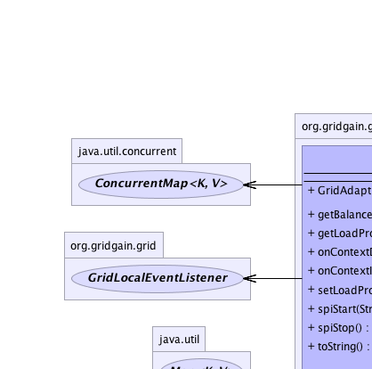
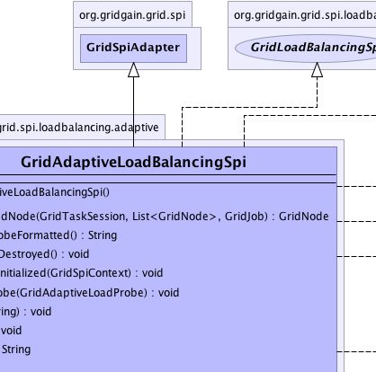
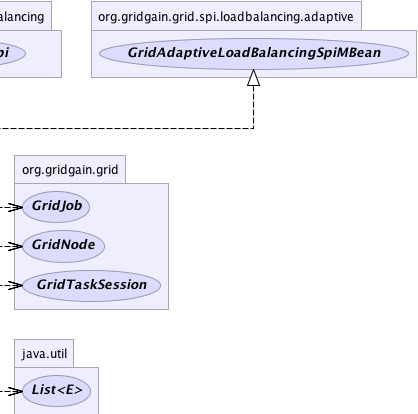
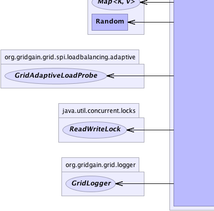
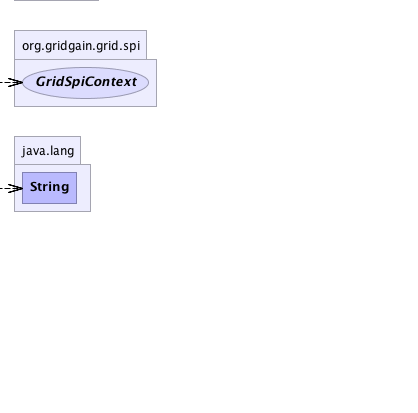

org.gridgain.grid.spi.GridSpiAdapter
org.gridgain.grid.spi.loadbalancing.adaptive.GridAdaptiveLoadBalancingSpi
org.gridgain.grid.spi.GridSpiAdapter
org.gridgain.grid.spi.loadbalancing.adaptive.GridAdaptiveLoadBalancingSpi
|
GridGain™ 3.6.0c
Community Edition |
|||||||||
| PREV CLASS NEXT CLASS | FRAMES NO FRAMES | |||||||||
| SUMMARY: NESTED | FIELD | CONSTR | METHOD | DETAIL: FIELD | CONSTR | METHOD | |||||||||
java.lang.Object
@GridSpiInfo(author="GridGain Systems",
url="www.gridgain.com",
email="support@gridgain.com",
version="3.6.0c.13012012")
@GridSpiMultipleInstancesSupport(value=true)
public class GridAdaptiveLoadBalancingSpiLoad balancing SPI that adapts to overall node performance. It proportionally distributes more jobs to more performant nodes based on a pluggable and dynamic node load probing.
GridAdaptiveLoadProbe interface and user is
free to provide custom implementations. By default
GridAdaptiveCpuLoadProbe implementation is used
which distributes jobs to nodes based on average CPU load
on every node.
The following load probes are available with the product:
GridAdaptiveCpuLoadProbe - defaultGridAdaptiveBenchmarkLoadProbeGridAdaptiveProcessingTimeLoadProbeGridAdaptiveJobCountLoadProbeGridAdaptiveLoadProbe.getLoad(GridNode, int) returns a value of 0,
then implementation will assume that load value is simply not available and
will try to calculate an average of load values for other nodes. If such
average cannot be obtained (all node load values are 0), then a value
of 1 will be used.
When working with node metrics, take into account that all averages are
calculated over metrics history size defined by GridConfiguration.getMetricsExpireTime()
and GridConfiguration.getMetricsHistorySize() grid configuration parameters.
Generally the larger these configuration parameter values are, the more precise the metrics are.
You should tune these values based on the level of accuracy needed vs. the additional memory
that would be required for storing metrics.
You should also keep in mind that metrics for remote nodes are delayed (usually by the
heartbeat frequency). So if it is acceptable in your environment, set the heartbeat frequency
to be more inline with job execution time. Generally, the more often heartbeats between nodes
are exchanged, the more precise the metrics are. However, you should keep in mind that if
heartbeats are exchanged too often then it may create unnecessary traffic in the network.
Heartbeats (or metrics update frequency) can be configured via underlying
GridDiscoverySpi used in your grid.
Here is an example of how probing can be implemented to use number of active and waiting jobs as probing mechanism:
public class FooBarLoadProbe implements GridAdaptiveLoadProbe {
// Flag indicating whether to use average value or current.
private int useAvg = true;
public FooBarLoadProbe(boolean useAvg) {
this.useAvg = useAvg;
}
// Calculate load based on number of active and waiting jobs.
public double getLoad(GridNode node, int jobsSentSinceLastUpdate) {
GridNodeMetrics metrics = node.getMetrics();
if (useAvg) {
double load = metrics.getAverageActiveJobs() + metrics.getAverageWaitingJobs();
if (load > 0) {
return load;
}
}
return metrics.getCurrentActiveJobs() + metrics.getCurrentWaitingJobs();
}
}
GridTaskSplitAdapter then load balancing logic
is transparent to your code and is handled automatically by the adapter.
Here is an example of how your task will look:
public class MyFooBarTask extends GridTaskSplitAdapter<Object, Object> {
@Override
protected Collection<? extends GridJob> split(int gridSize, Object arg) throws GridException {
List<MyFooBarJob> jobs = new ArrayList<MyFooBarJob>(gridSize);
for (int i = 0; i < gridSize; i++) {
jobs.add(new MyFooBarJob(arg));
}
// Node assignment via load balancer
// happens automatically.
return jobs;
}
...
}
If you need more fine-grained control over how some jobs within task get mapped to a node
and use affinity load balancing for some other jobs within task, then you should use
GridTaskAdapter. Here is an example of how your task will look. Note that in this
case we manually inject load balancer and use it to pick the best node. Doing it in
such way would allow user to map some jobs manually and for others use load balancer.
public class MyFooBarTask extends GridTaskAdapter<String, String> {
// Inject load balancer.
@GridLoadBalancerResource
GridLoadBalancer balancer;
// Map jobs to grid nodes.
public Map<? extends GridJob, GridNode> map(List<GridNode> subgrid, String arg) throws GridException {
Map<MyFooBarJob, GridNode> jobs = new HashMap<MyFooBarJob, GridNode>(subgrid.size());
// In more complex cases, you can actually do
// more complicated assignments of jobs to nodes.
for (int i = 0; i < subgrid.size(); i++) {
// Pick the next best balanced node for the job.
jobs.put(new MyFooBarJob(arg), balancer.getBalancedNode())
}
return jobs;
}
// Aggregate results into one compound result.
public String reduce(List<GridJobResult> results) throws GridException {
// For the purpose of this example we simply
// concatenate string representation of every
// job result
StringBuilder buf = new StringBuilder();
for (GridJobResult res : results) {
// Append string representation of result
// returned by every job.
buf.append(res.getData().string());
}
return buf.string();
}
}
GridJobsLoadBalancingSpi either from Spring XML file or
directly. The following configuration parameters are supported:
GridAdaptiveLoadBalancingSpi.setLoadProbe(GridAdaptiveLoadProbe)).
This configuration parameter supplies a custom algorithm for probing a node's load.
By default, GridAdaptiveCpuLoadProbe implementation is used which
takes every node's CPU load and tries to send proportionally more jobs to less loaded nodes.
Below is Java configuration example:
GridAdaptiveLoadBalancingSpi spi = new GridAdaptiveLoadBalancingSpi(); // Configure probe to use latest job execution time vs. average. GridAdaptiveProcessingTimeLoadProbe probe = new GridAdaptiveProcessingTimeLoadProbe(false); spi.setLoadProbe(probe); GridConfigurationAdapter cfg = new GridConfigurationAdapter(); // Override default load balancing SPI. cfg.setLoadBalancingSpi(spi); // Starts grid. G.start(cfg);Here is how you can configure
GridJobsLoadBalancingSpi using Spring XML configuration:
<property name="loadBalancingSpi">
<bean class="org.gridgain.grid.spi.loadBalancing.adaptive.GridAdaptiveLoadBalancingSpi">
<property name="loadProbe">
<bean class="org.gridgain.grid.spi.loadBalancing.adaptive.GridAdaptiveProcessingTimeLoadProbe">
<constructor-arg value="false"/>
</bean>
</property>
</bean>
</property>

For information about Spring framework visit www.springframework.org
| Wiki | |
| Forum |
|  |  |  |
|  |  |
 |
| Constructor Summary | |
|---|---|
GridAdaptiveLoadBalancingSpi()
|
|
| Method Summary | |
|---|---|
GridNode |
getBalancedNode(GridTaskSession ses,
List<GridNode> top,
GridJob job)
Gets balanced node for specified job within given task session. |
String |
getLoadProbeFormatted()
Gets text description of current load probing implementation used. |
void |
onContextDestroyed()
Callback invoked prior to stopping grid before SPI context is destroyed. |
void |
onContextInitialized(GridSpiContext spiCtx)
Callback invoked when SPI context is initialized. |
void |
setLoadProbe(GridAdaptiveLoadProbe probe)
Sets implementation of node load probe. |
void |
spiStart(String gridName)
This method is called to start SPI. |
void |
spiStop()
This method is called to stop SPI. |
String |
toString()
|
| Methods inherited from class org.gridgain.grid.spi.GridSpiAdapter |
|---|
assertParameter, checkConfigurationConsistency, configInfo, createSpiAttributeName, getAuthor, getConsistentAttributeNames, getGridGainHome, getLocalNodeId, getName, getNodeAttributes, getSpiContext, getStartTimestamp, getStartTimestampFormatted, getUpTime, getUpTimeFormatted, getVendorEmail, getVendorUrl, getVersion, injectables, registerMBean, setJson, setName, startInfo, startStopwatch, stopInfo, unregisterMBean |
| Methods inherited from class java.lang.Object |
|---|
clone, equals, finalize, getClass, hashCode, notify, notifyAll, wait, wait, wait |
| Methods inherited from interface org.gridgain.grid.spi.GridSpi |
|---|
getName, getNodeAttributes |
| Methods inherited from interface org.gridgain.grid.spi.GridSpiJsonConfigurable |
|---|
setJson |
| Methods inherited from interface org.gridgain.grid.spi.GridSpiManagementMBean |
|---|
getAuthor, getGridGainHome, getLocalNodeId, getName, getStartTimestamp, getStartTimestampFormatted, getUpTime, getUpTimeFormatted, getVendorEmail, getVendorUrl, getVersion |
| Constructor Detail |
|---|
public GridAdaptiveLoadBalancingSpi()
| Method Detail |
|---|
public String getLoadProbeFormatted()
getLoadProbeFormatted in interface GridAdaptiveLoadBalancingSpiMBean@GridSpiConfiguration(optional=true) public void setLoadProbe(GridAdaptiveLoadProbe probe)
GridAdaptiveProcessingTimeLoadProbe
is used which proportionally distributes load based on the average job execution
time on every node.
probe - Implementation of node load probe
public void spiStart(@Nullable
String gridName)
throws GridSpiException
spiStart in interface GridSpiGridSpiException - Throws in case of any error during SPI start.gridName - Name of grid instance this SPI is being started for
(null for default grid).
public void spiStop()
throws GridSpiException
Note that this method can be called at any point including during recovery of failed start. It should make no assumptions on what state SPI will be in when this method is called.
spiStop in interface GridSpiGridSpiException - Thrown in case of any error during SPI stop.
public void onContextInitialized(GridSpiContext spiCtx)
throws GridSpiException
This method is invoked after GridSpi.spiStart(String) method is
completed, so SPI should be fully functional at this point. Use this
method for post-start initialization, such as subscribing a discovery
listener, sending a message to remote node, etc...
onContextInitialized in interface GridSpionContextInitialized in class GridSpiAdapterGridSpiException - If context initialization failed (grid will be stopped).spiCtx - Spi context.public void onContextDestroyed()
If GridSpiAdapter is used for SPI implementation, then it will
replace actual context with dummy no-op context which is usually good-enough
since grid is about to shut down.
onContextDestroyed in interface GridSpionContextDestroyed in class GridSpiAdapter
public GridNode getBalancedNode(GridTaskSession ses,
List<GridNode> top,
GridJob job)
throws GridException
getBalancedNode in interface GridLoadBalancingSpiGridException - If failed to get next balanced node.ses - Grid task session for currently executing task.top - Topology of task nodes from which to pick the best balanced node for given job.job - Job for which to pick the best balanced node.
public String toString()
toString in class Object
|
GridGain™ 3.6.0c
Community Edition |
|||||||||
| PREV CLASS NEXT CLASS | FRAMES NO FRAMES | |||||||||
| SUMMARY: NESTED | FIELD | CONSTR | METHOD | DETAIL: FIELD | CONSTR | METHOD | |||||||||
|
GridGain - Real Time Big Data
|
|

|
|